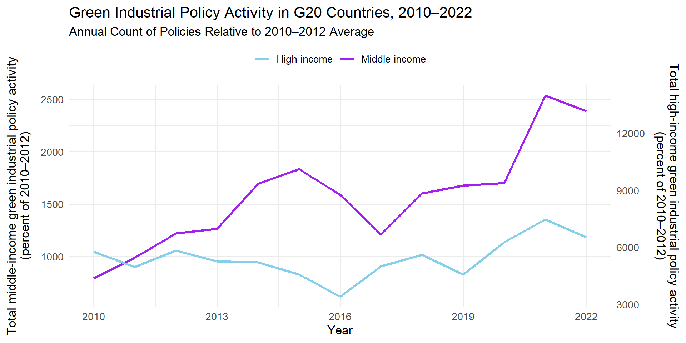

# -------------------------------
# STEP 1: Load Required Libraries
# -------------------------------
if (!require(pacman)) install.packages("pacman")
pacman::p_unload(all)
pacman::p_load(tidyverse, haven, janitor)
# -------------------------------
# STEP 2: Load the Raw Dataset
# -------------------------------
# Define the correct raw URL of the .dta file
url <- "https://raw.githubusercontent.com/anvitho07/Data-science-presentation-final/main/IP_G20.dta"
# Create a temporary local file to download the dataset
temp_file <- tempfile(fileext = ".dta")
# Download the dataset from GitHub
download.file(url, temp_file, mode = "wb") # use "wb" for binary files
# Read the dataset
raw_data <- read_dta(temp_file)
# -------------------------------
# STEP 3: Filter Valid Policies and Deduplicate
# (one row per policy-year-country combination)
# -------------------------------
green_data <- raw_data %>%
filter(!is.na(MeasureDescriptionTokens)) %>%
filter(!is.na(AnnouncedYear)) %>%
distinct(MeasureID, AnnouncedYear, CountryStd, .keep_all = TRUE)
# -------------------------------
# STEP 4: Classify Countries as High-income vs Middle-income
# (same static grouping as in Stata script)
# -------------------------------
high_income <- c("Australia", "Canada", "France", "Germany", "Italy", "Japan",
"Republic of Korea", "United Kingdom", "United States", "European Union")
green_data <- green_data %>%
mutate(IncomeGroup = ifelse(CountryStd %in% high_income, "High-income", "Middle-income"))
# -------------------------------
# STEP 5: Count Green Policies Per Year & Group
# -------------------------------
counts <- green_data %>%
group_by(AnnouncedYear, IncomeGroup) %>%
summarise(policy_count = n(), .groups = "drop")
# -------------------------------
# STEP 6: Compute the 2010–2012 Average (Baseline Index)
# -------------------------------
baseline <- counts %>%
filter(AnnouncedYear %in% 2010:2012) %>%
group_by(IncomeGroup) %>%
summarise(baseline_avg = mean(policy_count), .groups = "drop")
# -------------------------------
# STEP 7: Calculate Index as Percent of 2010–2012 Baseline
# (Multiplied by 1000 to match paper's visual scaling)
# -------------------------------
final <- counts %>%
left_join(baseline, by = "IncomeGroup") %>%
mutate(index = (policy_count / baseline_avg) * 1000)
# -------------------------------
# STEP 8: Separate Data for Visualization
# -------------------------------
mid_df <- final %>% filter(IncomeGroup == "Middle-income")
high_df <- final %>% filter(IncomeGroup == "High-income")
# -------------------------------
# STEP 9: Plot Final Figure
# -------------------------------
ggplot() +
geom_line(data = mid_df, aes(x = AnnouncedYear, y = index, color = "Middle-income"), size = 1.2) +
geom_line(data = high_df, aes(x = AnnouncedYear, y = index, color = "High-income"), size = 1.2) +
scale_y_continuous(
name = "Total middle-income green industrial policy activity\n(percent of 2010–2012)",
sec.axis = sec_axis(~ . * (14000 / max(mid_df$index)), name = "Total high-income green industrial policy activity\n(percent of 2010–2012)")
) +
scale_color_manual(values = c("Middle-income" = "purple", "High-income" = "skyblue"), name = NULL) +
scale_x_continuous(breaks = c(2010, 2013, 2016, 2019, 2022)) +
labs(
title = "Green Industrial Policy Activity in G20 Countries, 2010–2022",
subtitle = "Annual Count of Policies Relative to 2010–2012 Average",
x = "Year"
) +
theme_minimal(base_size = 13) +
theme(
axis.title.y.left = element_text(margin = margin(r = 10)),
axis.title.y.right = element_text(margin = margin(l = 10)),
legend.position = "top"
)Data Science Replication Study
Team A
Data Science for Business
Team A:
Mohamad Abdulla
Anvith Amin
Manjunath Mallikarjun Kendhuli
Papers Reviewed
- Paper 1: Predicting Employee Attrition (IBM)
- Paper 2: Data Analytics for Optimizing and Predicting Employee Performance
- Paper 3: Migration and Innovation: Learning from Patent and Inventor Data
- Challenges faced during the project
Selected Paper
“The Political Economy of Green Industrial Policy”
Juhász et al., 2022
- Used Global Trade Alert (GTA) database
- Three key figures showing green policy trends in G20 countries
Problems Faced
- Unclear objectives at the beginning
- Extremely large and complex datasets
- GitHub deployment issues
Replication of Figure 1
- Title: Green Industrial Policy Activity in G20 Countries (2010–2022)
- What it shows:
- Annual green policy activity for Middle-income vs. High-income countries
- Indexed to 2010–2012 average = 100
- High-income line is scaled (divided by 5) for visual comparison
- Axes:
- Left Y-axis: Middle-income index
- Right Y-axis: High-income index (scaled)
- Left Y-axis: Middle-income index
Replication Figure

Fig 1: Green Industrial Policy Activity in G20 Countries, 2010–2022
Code Logic Summary
- Step 1: Load and clean raw data
- Import original
IP_G20.dtafile
- Filter valid rows and deduplicate by MeasureID–Year–Country
- Import original
- Step 2: Identify green policies
- Use keywords like climate, emission, renewable to flag green measures
- Step 3: Add income group classification
- Load World Bank Excel data
- Reshape to long format and convert fiscal to calendar years
- Merge with green policy data by country and year
- Load World Bank Excel data
- Step 4: Standardize income group labels
- Map
Hto “High-income”,LM/UMto “Middle-income”
- Remove unmatched or missing classifications
- Map
- Step 5: Count policies per year
- Group by year and income group
- Count number of green policies announced
- Group by year and income group
- Step 6: Compute 2010–2012 baseline
- Calculate average policy count in 2010–2012 for each group
- Step 7: Index calculation
- Create index:
(policy_count / baseline_avg) * 100
- Expresses annual activity relative to baseline (baseline = 100)
- Create index:
- Step 8: Visualization
- Plot both income groups on one chart
- Scale high-income index by
/5on secondary Y-axis for comparison
- Plot both income groups on one chart
R Code for Replication
Output of Figure 1 Replication
Replication of Figure 2
- Title: Top Five Green Industrial Policy Instruments across G20 Economies by Income Group (2010–2022)
- What it shows:
- Distribution of green industrial policies by instrument type (e.g. financial grant, state loan) -Comparison between High-income and Middle-income G20 countries -Focuses only on the top five most frequent instruments within each group -Measures are shown as shares of total green policy activity, normalized within each group
- Axes:
- Left Y-axis: Income group (High-income / Middle-income)
- Right Y-axis: Share of green policies by instrument type
- Left Y-axis: Income group (High-income / Middle-income)
Replication Figure

Figure 2: Top five industrial policy intruments
Code Logic Summary – Figure 2
Step 1: Load and prepare data
- Import
IP_G20.dta(policy dataset) andwb.xlsx(income classification) - Standardize column names using
clean_names()
- Import
Step 2: Filter relevant policies
- Keep policies from 2010–2022 with non-missing descriptions
- These represent green or environmentally relevant measures
Step 3: Assign income group
- Use a fixed list to classify countries as High-income or Middle-income
- Add this classification to each policy record
Step 4: Identify top 5 policy instruments
- Count frequency of each policy tool (
measure_type) - Select the top 5 most common types separately for each income group
- Count frequency of each policy tool (
Step 5: Compute usage shares
- Within each group, calculate how much each of the top 5 instruments was used
- Expressed as a share of total green policies in that group (0.0 to 1.0)
Step 6: Visualize with stacked bar chart
- Plot horizontal bars showing instrument composition by income group
- Use
coord_flip()to flip axes andnumber_format()to show decimals
Step 7: Display output
- Render the plot with minimal styling and a grouped color legend
R Code for Replication
# 0) Load packages
if (!requireNamespace("pacman", quietly = TRUE)) install.packages("pacman")
pacman::p_load(
haven, # for read_dta()
readxl, # for read_xlsx()
dplyr,
tidyr,
ggplot2,
scales, # for number_format()
janitor # for clean_names()
)
# -------------------------------
# 1) Ingest and clean-up
# -------------------------------
ip <- read_dta("E:/github/data science -presentation final/Data science presentation/Data-science-presentation-final/IP_G20.dta") %>%
clean_names()
# Read and clean the income group Excel file
wb <- read_xlsx("E:/github/data science -presentation final/Data science presentation/Data-science-presentation-final/wb.xlsx") %>%
clean_names()
# -------------------------------
# 2) Filter green policies (2010–2022) and assign income group
# -------------------------------
high_income_countries <- c(
"Australia", "Canada", "France", "Germany", "Italy",
"Japan", "Republic of Korea", "United Kingdom", "United States", "European Union"
)
green <- ip %>%
filter(
!is.na(measure_description_tokens),
announced_year >= 2010,
announced_year <= 2022
) %>%
mutate(
income_group = if_else(
country_std %in% high_income_countries,
"High-income",
"Middle-income"
)
)
# -------------------------------
# 3) Identify top 5 instrument types per income group
# -------------------------------
top5 <- green %>%
count(income_group, measure_type, name = "n") %>%
group_by(income_group) %>%
slice_max(n, n = 5) %>%
pull(measure_type) %>%
unique()
# -------------------------------
# 4) Compute shares of top 5 instruments
# -------------------------------
plot_df <- green %>%
filter(measure_type %in% top5) %>%
count(income_group, measure_type, name = "n") %>%
group_by(income_group) %>%
mutate(share = n / sum(n)) %>%
ungroup()
# -------------------------------
# 5) Build the horizontal stacked bar plot
# -------------------------------
p <- ggplot(plot_df, aes(
x = income_group,
y = share,
fill = measure_type
)) +
geom_col(position = "fill", width = 0.6) +
coord_flip() +
scale_y_continuous(
breaks = seq(0, 1, by = 0.2),
labels = number_format(accuracy = 0.1),
expand = expansion(mult = c(0, 0))
) +
labs(
title = "Top Five Green Industrial Policy Instruments Across G20 Economies\nby Income Group, 2010–2022",
x = NULL,
y = "Share of green industrial policy by instrument type",
fill = "Instrument Type"
) +
theme_minimal(base_size = 14) +
theme(
plot.title = element_text(face = "bold", size = 16, hjust = 0),
axis.text.y = element_text(size = 12),
panel.grid.minor = element_blank(),
legend.position = "bottom",
legend.key.size = unit(0.7, "lines")
)
# -------------------------------
# ️ 6) Display the plot
# -------------------------------
print(p)Output of Figure 2 Replication
Challenges faces
Uploaded local data files to GitHub and linked using raw URLs so others could run the code.
Replaced
percent_format()withnumber_format()to show axis labels as decimals.Renamed output to
index.htmlso GitHub Pages would display the updated version.
Future Work with this Replication
- Clean and verify all country names
- Match them correctly with World Bank data to fix missing values
- Improve keyword filtering
- Refine how we identify green policies using better or more complete keywords
- Match Stata version exactly
- Compare our R code outputs with the original Stata graphs for full accuracy
- Check missing data
- Investigate why some years or countries have fewer policies than expected
- Automate income group assignment
- Instead of manual grouping, use official classification files from the World Bank